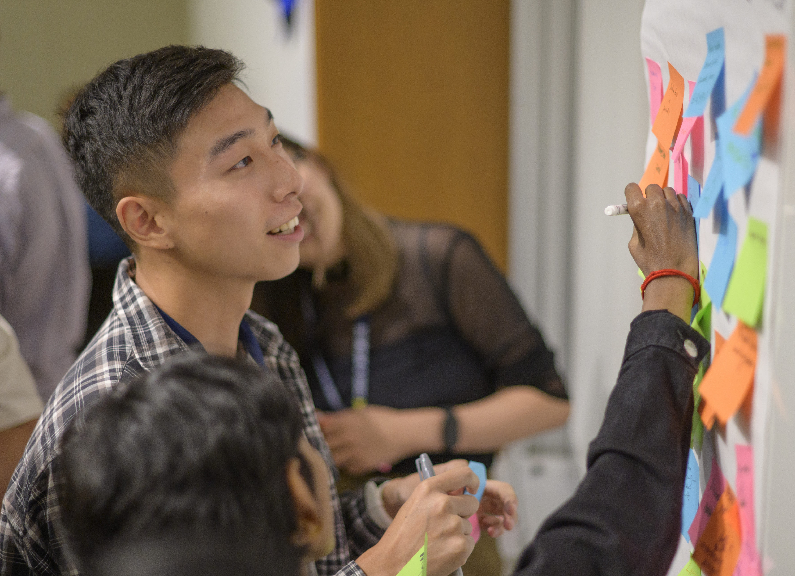
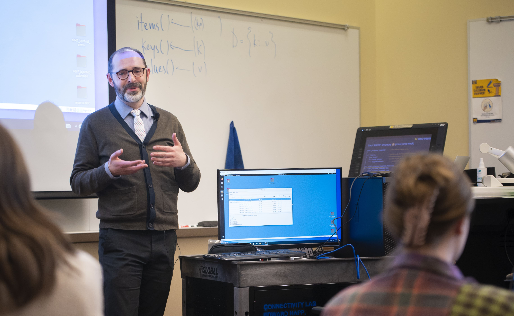

View Potential Career Options
At the School of Information, we know that your career journey is unique, with a world of opportunities to discover. Whether you’re just getting started or refining your goals, career exploration is about identifying your strengths, interests, and values, and connecting them to exciting possibilities in the information field.
Our resources, templates, and personalized coaching are designed to support you every step of the way—helping you build a strong resume, explore potential career paths, and put your best foot forward as you launch your professional journey.
Need more guidance? You can always meet with a CDO Career Coach to review your materials.


Data
Interested in Data? A career in data involves collecting, analyzing, and interpreting large sets of information to help organizations make informed decisions. Roles in this field include data analysts, data scientists, and data engineers, all of whom use technical and analytical skills to extract actionable insights from data.
Library & Archives
Interested in Library & Archives? A career in libraries and archives focuses on organizing, preserving, and providing access to information resources, including books, documents, and digital materials. Professionals in this field help connect people with knowledge while maintaining the integrity of historical and contemporary records.
UX
Interested in UX? A career in user experience (UX) centers on designing digital and physical products that are intuitive, accessible, and enjoyable, ensuring users have positive, efficient interactions with technology and services.
Consulting
Interested in Consulting? A career in consulting involves providing expert advice and strategic solutions to help organizations improve their performance, solve problems, and achieve their goals.
Software Engineering
Interested in Software Engineering? A career in software engineering focuses on designing, developing, and maintaining computer programs and applications that solve problems or enhance user experiences.
Product Managament
Interested in Product Management? A career in product management involves guiding the development and success of products by collaborating with cross-functional teams to define strategy, prioritize features, and deliver solutions that meet user and business needs.